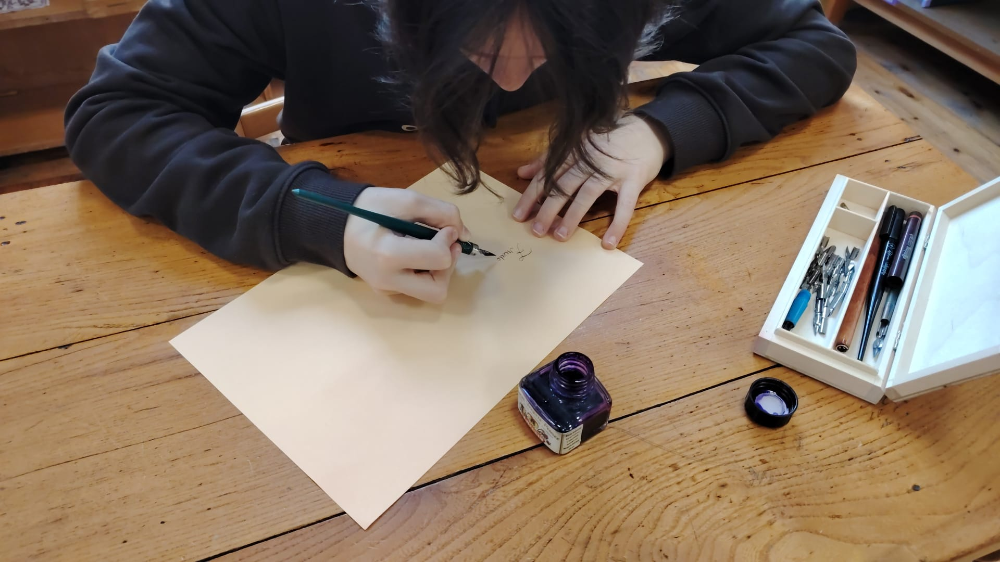

Galerie Photos

Brainstorming pour le choix du projet

Sortie pour voir le film « Sauvons les enfants »

Sortie pour voir le film « Lili »

Fabrication de la revue de presse par Iolas et Thomas

Fabrication de la revue de presse par Iolas et Thomas

Réalisation du carnet de la revue de presse par Lucie A.

Tournage du film « Le Colis de mamie » avec Malo, Iolas, Cyane, Lucie M. et Inès

Discussion sur la mise en page du site proposée par Malo

Coiffure et maquillage par Cyane et Anaïs

Tournage du « Retour de Frieda » au restaurant Crocodile

Tournage du « Retour de Frieda » au restaurant Crocodile

L'équipe du tournage devant le restaurant Crocodile

Codage du site par Malo

Épreuve écrite du concours (ça travaille dur !)

Couture de la robe par Anaïs

Tournage du film « Le Retour de Frieda » au collège

Confection de l'étoile par Anaïs

Développement du site par Malo

Tournage du film « Le Colis de mamie » en salle des profs par Lucie M.

Calligraphie à la plume par Valerio